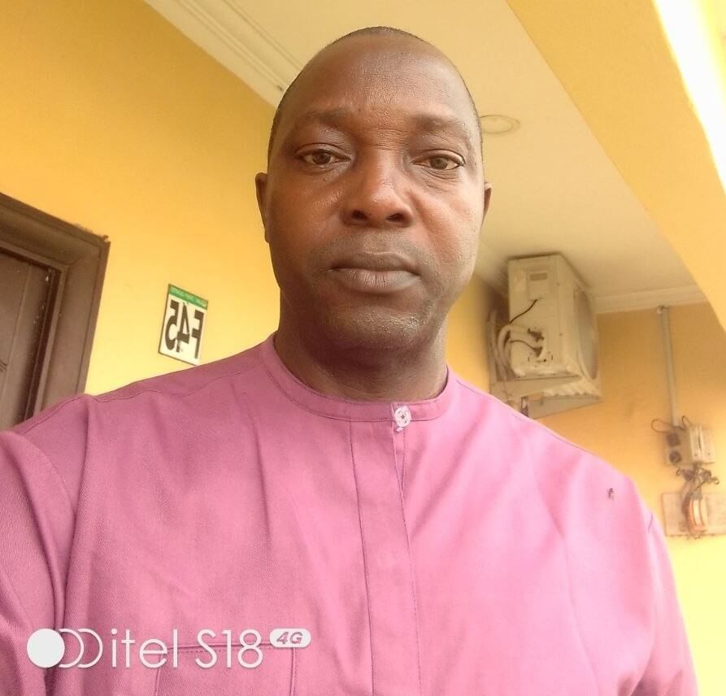

Edwin Esekhaigbe | WDD 130

My name is Edwin Esekhaigbe. I am a web development student currently taking WDD 130, Web Development Fundamentals. This course provides the foundational skills in HTML and CSS. I enjoy reading, playing music, and solving coding challenges. This page represents my first step toward success in this course.